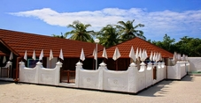
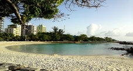
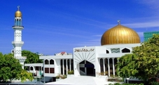

Top sights in Maldives
Utheemu Ganduvaru
This small palace was the childhood home of Malidivian national hero Mohammed Thakurufaanu, who, alongside with his brothers, overthrew Portuguese rule in 1573. Visitors are escorted around the complex of buildings by a member of staff from the museum and are able to see the fascinating 500-year-old wooden interiors, including swing beds (used to keep cool in the heat), lamps that burn coco palm oil, elaborate wooden carvings and a large palm-thatch shed used as a sleeping room for guests.
Artificial Beach
The eastern seafront of Male is the city’s recreational centre. Here a sweet little beach has been crafted from the breakwater tetrapods and there’s a whole range of fast food cafes next to it, as well as open fields for ad hoc games of soccer and cricket. Further up towards the airport ferry there are fairground attractions at the Majeediyya Carnival, including a bowling alley and more eateries.
Grand Friday Mosque and Islamic Centre
The golden dome of this impressive modern mosque dominates the skyline of Male and has become something of a symbol for the city. Opened in 1984, and built with help from the Gulf States, Pakistan, Brunei and Malaysia, the Grand Friday Mosque is striking in its plainness, built in white marble and virtually free from decoration. Set back off the main square, Jumhooree Maidan, and opposite the National Security Service Headquarters, it is the biggest mosque in the country.